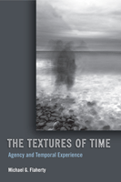

<body bgcolor="#FFFFFF" text="#000000" link="#0000FF" vlink="#CC0000" alink="#CC0000"><center><hr width="350" size="1" align="center" noshade>A thoughtful exploration of time and how we make it do our bidding<hr width="350" size="1" align="center" noshade><p><a href="https://cdcshoppingcart.uchicago.edu/Cart/ChicagoBook.aspx?ISBN=9781439902622&&PRESS=temple" target="_top">Buy this book!</a> | <a href="https://cdcshoppingcart.uchicago.edu/Cart/Cart.aspx?PRESS=temple" target="_top">View Cart</a> | <a href="https://cdcshoppingcart.uchicago.edu/Cart/Cart.aspx?PRESS=temple" target="_top">Check Out</a></p><p></p></center><!--none//--><h1>The Textures of Time</h1>
<H2>Agency and Temporal Experience</H2>
<h3>Michael G. Flaherty</h3>
<P>cloth 1-4399-0262-3 $75.50, Nov 10, <FONT COLOR=#990033>Available</FONT>
<br>paper 1-4399-0263-1 $28.95, Nov 10, <FONT COLOR=#990033>Available</FONT>
<br>Electronic Book 1-4399-0264-X $28.95 <FONT COLOR=#990033>Available</FONT>
<BR> 192 pp
6x9
2&nbsp;tables
</P><h3 align="center"><P><font color="#996633">Charles Horton Cooley Award for Best Book from the Society for the Study of Symbolic Interaction,
2012</font></P>
</H3>
<BLOCKQUOTE><I>"</i>The Textures of Time<i> features our temporal agency, the everyday tactics we use to manage the most elusive dimension of our lives. Based on hundreds of interviews, it offers us a rare, nuanced look into the various ways we manipulate when, for how long, in what order, and how often we do what we do, highlighting the tension between socially-imposed temporal constraints and individuals� temporal creativity."</i> <br>&#151<b>Eviatar Zerubavel</b>, Board of Governors Professor of Sociology at Rutgers University and author of <i>Hidden Rhythms: Schedules and Calendars in Social Life</i></I></BLOCKQUOTE>
<p>What do we mean when we say, "I made the time pass more quickly," or, "I�m creating some �me� time"? In <em>The Textures of Time</em>, Michael Flaherty examines how we alter or customize our experience of time. His detailed analysis reveals different strategies we use to try to manipulate time, further describing and defining those strategies within six discrete time categories: Duration, Frequency, Sequence, Timing, Allocation, and Taking Time.
</p><p>
Using in-depth interviews and analyzing responses through a sociological lens, Flaherty unearths folk theories and practices, which he calls "time work," that construct circumstances in order to provoke desired forms of temporal experience. As such, time is not justinflicted on us; rather, its various textures result from our intervention, and/or from our efforts to create different forms of temporal experience. These first-person accounts also highlight ongoing tensions between agency and determinism in social groups. Ultimately, in keeping with his central thesis, Flaherty's lucid prose make this book a quick read, and the strategies he describes reveal the profound and inventive ways we "manage the clock."</p>
<BR>&nbsp;<h2>Excerpt</h2><P>Excerpt available at <a href="http://www.temple.edu/tempress">www.temple.edu/tempress</a></p>
<BR>&nbsp;<h2>Reviews</h2>
<p><i>"Thanks to Michael Flaherty, we can no longer think about �time� as something that just passes. His work shows us how people shape, organize, and structure time, making an important empirical and theoretical contribution that promises to inform sociology, social psychology, and philosophy. Reading this book will cause you to think more deeply about a subject that you thought you already knew."</i><br>&#151;<b>Steven Hitlin</b>, Department of Sociology, University of Iowa
<p><i>"In </i>The Textures of Time<i> Michael Flaherty builds upon and moves beyond the issues he discussed in A Watched Pot. The book is an ambitious and ground-breaking examination of time as both a social construct and an object/resource that people actively and creatively manipulate (a process Flaherty calls �time work�). Written by one of the most talented and insightful social scientists exploring the sociology of time, </i>The Textures of Time<i> is sure to reward those who choose to �spend time� with it"</i>
<br>&#151;<b>Clinton Sanders</b>, Department of Sociology, University of Connecticut
<p><i>"[A]n interesting and original research effort.... [This] book should be of interest to researchers in the fields of sociology and psychology of time. It offers an interesting approach in stressing that people actively deal with time and are not simply the passive recipients of it." </i><br>&#151<b> <i>PsycCRITIQUES</i></b>
<p><i>"[A] fine sociological success.... Both agency and experience appear in the subtitle of </i>The Textures of Time<i>, and some of Flaherty�s most perceptive insights appear in his accounts of how the two are related in practice.... </i>The Textures of Time does<i> indeed earn its keep and deserves a place...on the sociological shelf."</i><br> &#151<b> <i>The American Journal of Sociology</i></b>
<p><i>"This is a �timely� and well-written study, enriched with information gathered from scores of non-structured interviews with college students in various settings.... It is recommended for all college and university libraries, and for introductory classes in social phenomenology." </i><br> &#151<b> <i>Human Studies</i></b>
<p><i>"This book is a valuable contribution to agency theory. It would be useful for those looking to extend their view of this area to include perceptions and manipulations of time, as well as those interested in attention or mediated experiences."</i> <br>&#151<b><i> Contemporary Sociology</i></b>
<p><i>"Readers will come away from Flaherty�s book emboldened to recognize agency in the mundane and with a new, or renewed, sense of how the individual distinctly enacts temporal experiences within social structures of time and simultaneous to them." </i><br>&#151<b> <i>Kronoscope: Journal for the Study of Time</i></b>
<p><i>"[Flaherty] provide[s] useful insights into everyday temporal behavior...[and] an extremely cogent explanation of the determinism-agency debate and...one of the clearer uses of the symbolic interaction frame to analyze data that I have encountered....an excellent value."</i><br>&#151<b><i>Social Forces </i></b>
<p><i>"Flaherty opens a new world before our eyes with his expert ability in weaving interview narratives and conceptual analysis, Flaherty guides the reader toward realizing the profound pervasiveness of temporal agency that we all engage in....Flaherty effectively communicates his theoretical concepts through a lucid and evocative writing style.... Flaherty's book is truly groundbreaking, and there are many insights to be gained that will spawn related areas of study.... Flaherty's book will surely become a sociological classic."</i> <br>&#151<b><i>Symbolic Interaction</i></b>
<p><i>"</i>The Textures of Time<i> presents a highly developed and intriguingly nuanced approach to the question of agency. The case studies presented run the gamut of current social conditions, and Flaherty�s ability to present even the most seemingly mundane details of individual life as insurrectionary or sublime temporal achievements by the individual make for a compelling discussion of temporal agency."</i><br>&#151<b><i>Time and Society</i></b>
<BR>&nbsp;<h2>Contents</h2><P>
<p>Acknowledgments
<br>1. Making Time
<br>2. Duration
<br>3. Frequency
<br>4. Sequence
<br>5. Timing
<br>6. Allocation
<br>7. Taking Time
<br>8. The Ironies of Temporal Agency
<br>Methodological Appendix
<br>Notes
<br>Index
</P><BR>&nbsp;<H2>About the Author(s)</H2>
<table><tr><td valign="top"><img src="/tempress/authors/2093_au1.gif" height="90" width="75"></td><td width="100%" valign="middle"><p><b>Michael G. Flaherty</b> is Professor of Sociology at Eckerd College. He is the author of <em>A Watched Pot: How We Experience Time</em>.</P></td></tr></table>
<BR><H2>Subject Categories</H2>
<p><A HREF="/tempress/sociology.html" TARGET="_top">Sociology</a>
<BR><A HREF="/tempress/philosophy.html" TARGET="_top">Philosophy and Ethics</a>
<BR><A HREF="/tempress/general.html" TARGET="_top">General Interest</a>
</p>
<p align="center"><a href="https://cdcshoppingcart.uchicago.edu/Cart/ChicagoBook.aspx?ISBN=9781439902622&&PRESS=temple" target="_top">Buy this book!</a> | <a href="https://cdcshoppingcart.uchicago.edu/Cart/Cart.aspx?PRESS=temple" target="_top">View Cart</a> | <a href="https://cdcshoppingcart.uchicago.edu/Cart/Cart.aspx?PRESS=temple" target="_top">Check Out</a></p><p><font face="Arial" size="1"><a href="copyright.html" onMouseOver="window.status='Web Copyright Policy';return true;" onMouseOut="window.status=''" title="Web Copyright Policy">&copy;</a> 2015 <a href="http://www.temple.edu" target="new" onMouseOver="window.status='Link to Temple University home page';return true;" onMouseOut="window.status=''" title="Link to Temple University home page">Temple University</a>. All Rights Reserved. http://www.temple.edu/tempress/titles/2093_reg.html</font></p>